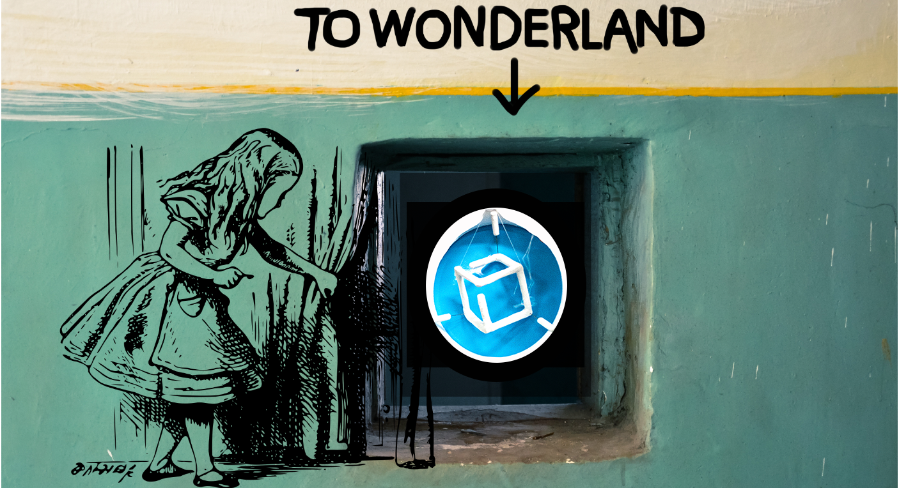

... 'cause the world is multidimensional
Kompakkt loading IIIF 3D Manifests
Demo implementation with Babylon.js
(or: How we secretly tidy up behind the curtains)
Presented by Zoe Schubert
Berlin State Library | TIB - Leibniz Information Centre for Science & Tech.
Overview
(Semantic) Kompakkt

Loading 3D Manifests

Unexpected Benefits
(Semantic) Kompakkt
Code Base
Loading 3D Manifests
Basic Model in Scene
Background Color

Spaces
Babylon.js & Kompakkt
Babylon.js
- Babylon.js is inherently and deeply left handed with Y up
- We offer an alternative with the scene.useRightHandedSystem but this is not the main mode. And even in this mode the system is still Y up (but with right handed mode).
- By setting the camera upVector to 0, 0,1 you are actually rotating the camera but all the maths will still be done in a Y up system

Unexpected Benefits
Past
Future
Many thanks,
especially to our users and the IIIF 3D TSG!
We are happy about any collaboration
kompakkt.de
info@kompakkt.de
https://kompakkt.github.io/Info/